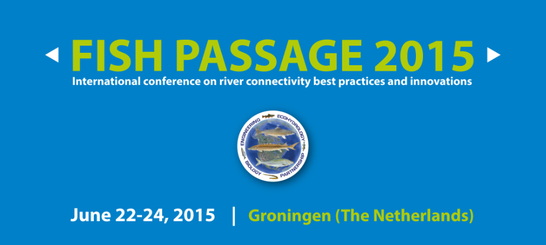
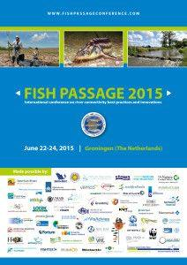

News ·
Fish Passage Conference 2015

L’ Amministratore delegato di GRAIA, dott. Cesare Mario Puzzi, ha partecipato alla quinta edizione di “Fish Passage 2015 – International conference on river connectivity best practices and innovations” che si è tenuta dal 22 al 24 giugno 2015 a Groningen nei Paesi Bassi.
Fish passage 2015 è stata un’importante sede di scambio di risultati ed esperienze sulle tematiche relative ai passaggi per pesci, alla quale hanno partecipato ricercatori e professionisti del settore provenienti da tutto il mondo.
Il nostro Amministratore delegato, dott. Cesare Mario Puzzi, ha partecipato all’evento presentando un poster sul ripristino della continuità fluviale nel Fiume Tresa (Varese, Lombardia), nel quale sono stati esposti anche i primi risultati del videomonitoraggio. Per maggiori informazioni è possibile consultare direttamente il poster allegato al presente articolo.


La locandina dell’evento